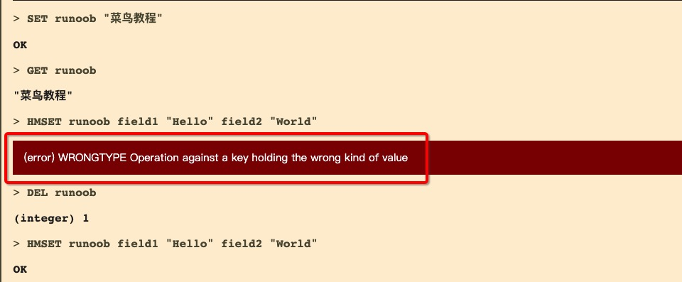

Redis データ型
Redis は主に以下のデータ型をサポートしています：
- string（文字列）：基本的なデータ格納単位で、文字列、整数、または浮動小数点数を格納できます。
- hash（ハッシュ）：キーバリューペアの集合で、複数のフィールドを格納できます。
- list（リスト）：シンプルなリストで、一連の文字列要素を格納できます。
- set（セット）：順序なしの集合で、重複しない文字列要素を格納できます。
- zset（sorted set：ソート済みセット）：セットに似ていますが、各要素にはスコア（score）が関連付けられています。
- ビットマップ（Bitmaps）：文字列型に基づいており、各ビットに対して操作できます。
- ハイパーログログ（HyperLogLogs）：基数統計に使用され、集合内の一意な要素数を推定できます。
- 地理空間（Geospatial）：地理位置情報の格納に使用されます。
- パブリッシュ/サブスクライブ（Pub/Sub）：メッセージ通信パターンであり、クライアントがメッセージチャンネルを購読し、そのチャンネルに公開されたメッセージを受信できます。
- ストリーム（Streams）：メッセージキューやログ保存に使用され、メッセージの永続化と時間順の並び替えをサポートします。
- モジュール（Modules）：Redis はモジュールの動的読み込みをサポートしており、Redis の機能を拡張できます。
String（文字列）
string は redis の最も基本的な型です。Memcached とまったく同じ型と考えることができ、1 つの key が 1 つの value に対応します。
string 型はバイナリセーフです。つまり、redis の string には、jpg 画像やシリアライズされたオブジェクトなど、あらゆるデータを含めることができます。
string 型は Redis の最も基本的なデータ型であり、string 型の値は最大 512MB まで格納できます。
よく使うコマンド
SET key value：キーの値を設定します。GET key：キーの値を取得します。INCR key：キーの値を 1 増やします。DECR key：キーの値を 1 減らします。APPEND key value：値をキーの値の末尾に追加します。
例
redis 127.0.0.1:6379> SET runoob "菜鸟教程" OK redis 127.0.0.1:6379> GET runoob "菜鸟教程"
上記の例では、Redis のSET 和 GETコマンドを使用しました。キーは runoob で、対応する値は菜鸟教程。
注意：1 つのキーは最大 512MB まで格納できます。
Hash（ハッシュ）
Redis hash はキーバリュー(key=>value)ペアの集合であり、小規模な NoSQL データベースに似ています。
Redis hash は string 型の field と value のマッピングテーブルであり、オブジェクトの格納に特に適しています。
各ハッシュには最大 2^32 - 1 個のキーバリューペアを格納できます。
HSET key field value：ハッシュテーブル内のフィールドの値を設定します。HGET key field：ハッシュテーブル内のフィールドの値を取得します。HGETALL key：ハッシュテーブル内のすべてのフィールドと値を取得します。HDEL key field：ハッシュテーブル内の1つ以上のフィールドを削除します。
よく使うコマンド
例
DEL runoob以前のテストで使用したキーを削除するために使います。そうしないとエラーが発生します：(error) WRONGTYPE Operation against a key holding the wrong kind of value

redis 127.0.0.1:6379> DEL runoob redis 127.0.0.1:6379> HMSET runoob field1 "Hello" field2 "World" "OK" redis 127.0.0.1:6379> HGET runoob field1 "Hello" redis 127.0.0.1:6379> HGET runoob field2 "World"
この例では、Redis のHMSET, HGETコマンドを使用し、HMSET2 つのfield=>valueペアを設定し、HGET で対応するfield対応するvalue。
List（リスト）
Redis リストはシンプルな文字列リストで、挿入順に並べられます。リストの先頭（左）または末尾（右）に要素を追加できます。
リストには最大 2^32 - 1 個の要素を格納できます。
よく使うコマンド
LPUSH key value：値をリストの先頭に挿入します。RPUSH key value：値をリストの末尾に挿入します。LPOP key：リストの最初の要素を削除して取得します。RPOP key：リストの最後の要素を削除して取得します。LRANGE key start stop：リストの指定範囲内の要素を取得します。
例
redis 127.0.0.1:6379> DEL runoob redis 127.0.0.1:6379> lpush runoob redis (integer) 1 redis 127.0.0.1:6379> lpush runoob mongodb (integer) 2 redis 127.0.0.1:6379> lpush runoob rabbitmq (integer) 3 redis 127.0.0.1:6379> lrange runoob 0 10 1) "rabbitmq" 2) "mongodb" 3) "redis" redis 127.0.0.1:6379>
Set（セット）
Redis の Set は string 型の順序なし集合です。
集合はハッシュテーブルで実装されているため、追加、削除、検索の計算量はすべて O(1) です。
よく使うコマンド
SADD key value：集合に1つ以上のメンバーを追加します。SREM key value：集合から1つ以上のメンバーを削除します。SMEMBERS key：集合内のすべてのメンバーを返します。SISMEMBER key value：値が集合のメンバーであるかどうかを判定します。
sadd コマンド
string 要素を key に対応する set 集合に追加します。成功すると 1 を返し、要素がすでに集合内にある場合は 0 を返します。
sadd key member
例
redis 127.0.0.1:6379> DEL runoob redis 127.0.0.1:6379> sadd runoob redis (integer) 1 redis 127.0.0.1:6379> sadd runoob mongodb (integer) 1 redis 127.0.0.1:6379> sadd runoob rabbitmq (integer) 1 redis 127.0.0.1:6379> sadd runoob rabbitmq (integer) 0 redis 127.0.0.1:6379> smembers runoob 1) "redis" 2) "rabbitmq" 3) "mongodb"
注意：上記の例では rabbitmq が 2 回追加されましたが、集合内の要素の一意性により、2 回目に挿入された要素は無視されます。
集合内の最大メンバー数は 232- 1（4294967295、各集合には40億以上のメンバーを格納できます）。
zset（sorted set：ソート済みセット）
Redis の zset は set と同じく string 型要素の集合であり、重複するメンバーは許可されません。異なる点は、各要素に double 型のスコアが関連付けられていることです。redis はこのスコアによって集合内のメンバーを小さい順に並べ替えます。
zset のメンバーは一意ですが、スコア（score）は重複してもかまいません。
よく使うコマンド
ZADD key score value：ソート済みセットに1つ以上のメンバーを追加するか、既存メンバーのスコアを更新します。ZRANGE key start stop [WITHSCORES]：指定された範囲内のメンバーを返します。ZREM key value：ソート済みセットから1つ以上のメンバーを削除します。ZSCORE key value：ソート済みセット内のメンバーのスコア値を返します。
zadd コマンド
要素を集合に追加します。要素が集合内に存在する場合は対応するスコアを更新します。
zadd key score member
例
redis 127.0.0.1:6379> DEL runoob redis 127.0.0.1:6379> zadd runoob 0 redis (integer) 1 redis 127.0.0.1:6379> zadd runoob 0 mongodb (integer) 1 redis 127.0.0.1:6379> zadd runoob 0 rabbitmq (integer) 1 redis 127.0.0.1:6379> zadd runoob 0 rabbitmq (integer) 0 redis 127.0.0.1:6379> ZRANGEBYSCORE runoob 0 1000 1) "mongodb" 2) "rabbitmq" 3) "redis"
その他の高度なデータ型
HyperLogLog
- 基数推定アルゴリズムに使用されるデータ構造です。
- 一意な値の近似値を統計するためによく使用されます。
Bitmaps
- ビット配列であり、文字列に対してビット操作を行うことができます。
- ブルームフィルタなどのビット操作を実装するためによく使用されます。
Geospatial Indexes
- 地理空間データを処理し、地理空間インデックスと半径クエリをサポートします。
- ログデータ型であり、時系列データをサポートします。
- メッセージキューやリアルタイムデータ処理に使用されます。
FK
429***967@qq.com
各データ型の適用シナリオ：
FK
429***967@qq.com
fsisjacky
fsi***cky@163.com
参考アドレス
注意：Redisは複数のデータベースをサポートしており、各データベースのデータは分離され共有できません。また、これはスタンドアロンの場合のみで、クラスターの場合はデータベースの概念がありません。
Redisは辞書構造のストレージサーバーです。実際には1つのRedisインスタンスがデータを格納するための複数の辞書を提供しており、クライアントはデータをどの辞書に格納するかを指定できます。これは、リレーショナルデータベースのインスタンス内に複数のデータベースを作成できるというよく知られた仕組みと似ているため、各辞書を独立したデータベースと見なすことができます。
各データベースは外部に対して0から始まる連番で命名されます。Redisはデフォルトで16個のデータベースをサポートしています（設定ファイルでさらに多くのデータベースをサポート可能、上限なし）。databasesを設定することでこの数値を変更できます。クライアントはRedisとの接続確立後、自動的に0番データベースを選択しますが、いつでもSELECTコマンドを使用してデータベースを切り替えることができます。例えば、1番データベースを選択するには：
しかし、これらの数字で命名されたデータベースは、私たちが一般的に理解しているデータベースとは異なります。まず、Redisはデータベースの名前をカスタマイズすることをサポートしておらず、各データベースは番号で命名されます。開発者はどのデータベースにどのデータが格納されているかを自分で記録する必要があります。また、Redisはデータベースごとに異なるアクセスパスワードを設定することもサポートしていないため、クライアントはすべてのデータベースにアクセスできるか、1つのデータベースにもアクセス権限がないかのどちらかです。最も重要な点は、複数のデータベース間が完全に分離されているわけではないことです。例えば、FLUSHALLコマンドは1つのRedisインスタンス内のすべてのデータベースのデータをクリアできます。以上のことから、これらのデータベースはどちらかというと名前空間のようなものであり、異なるアプリケーションのデータを格納するのには適していません。例えば、0番データベースに特定のアプリケーションの本番環境のデータを格納し、1番データベースにテスト環境のデータを格納することはできますが、0番データベースにAアプリケーションのデータを格納し、1番データベースにBアプリケーションのデータを格納するのには適していません。異なるアプリケーションは異なるRedisインスタンスを使用してデータを格納すべきです。Redisは非常に軽量で、空のRedisインスタンスが占有するメモリは約1MB程度であるため、複数のRedisインスタンスが余分にメモリを占有することを心配する必要はありません。
fsisjacky
fsi***cky@163.com
参考アドレス